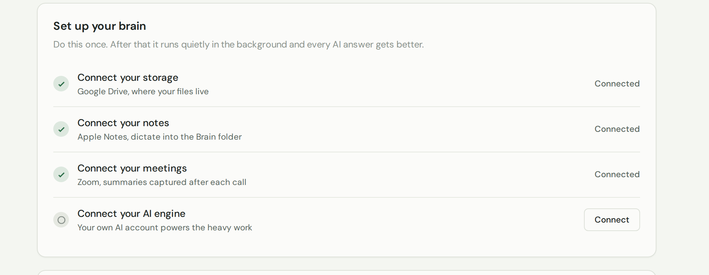
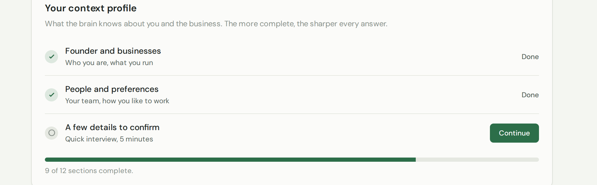
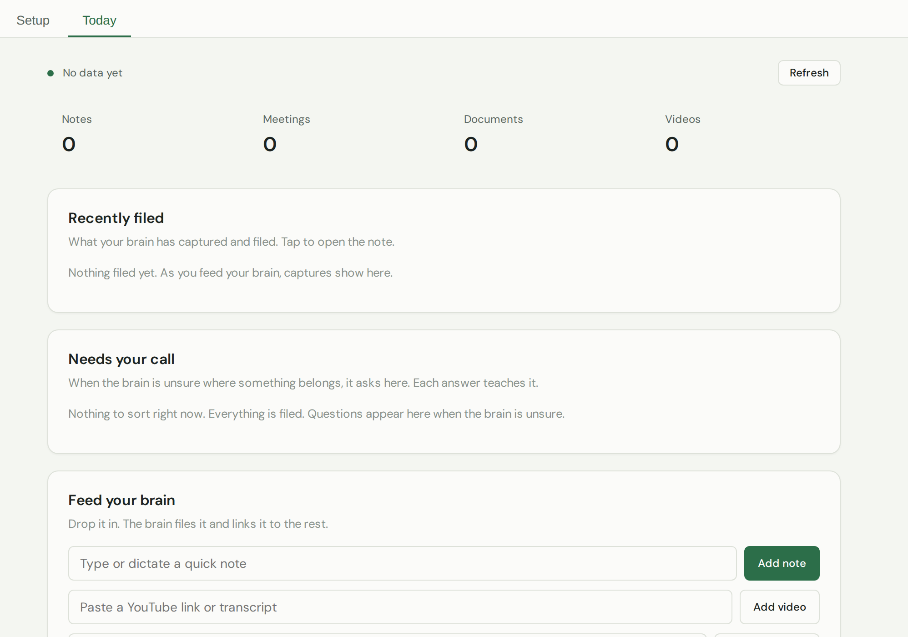

A memory for your business. Feed it your files, notes and meetings once, and every AI answer across the platform gets sharper.
What this page is for
The AI Brain quietly remembers everything about you and your business — your files, notes, meetings, and a short profile of how you work. That way, the AI helpers everywhere else on the platform give you better, more personal answers. You set it up once, then it runs in the background.
What you can do here
Connect where your information lives — your files, notes and meetings.
Fill in a short profile about you and your business.
Drop in new notes or videos any time to top it up.
See what it's captured, and answer the odd question when it's unsure.
There are two tabs: Setup (do this once) and Today (the day-to-day).
Setting it up (once)
On the Setup tab, connect your sources — your storage, notes and meetings — so the brain can read them.

Connect once; a green tick means it's linked.
Fill in your profile. Click Continue for a quick interview — the more complete it is, the sharper every answer.

A few minutes here makes every AI answer better.
Day to day
The Today tab shows what's been captured, flags anything the brain is unsure about, and lets you feed in a quick note or a video whenever you like.

Check in here, and drop in anything worth remembering.
Tip: The more you feed it, the better every AI answer becomes — a few minutes now pays off everywhere else on the platform.